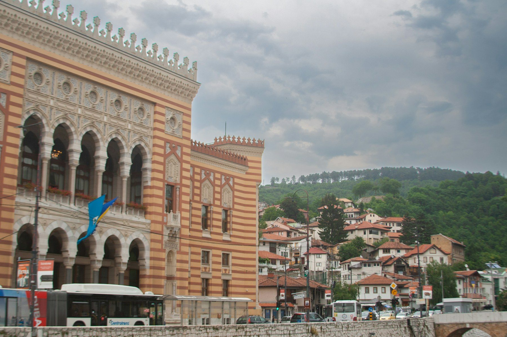
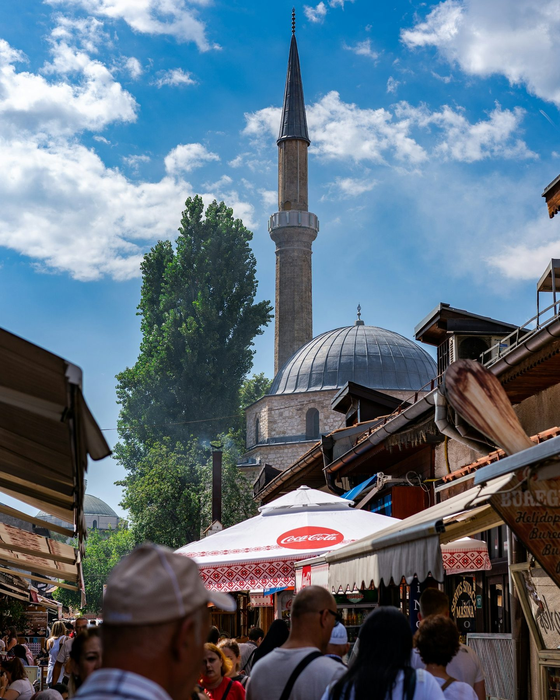
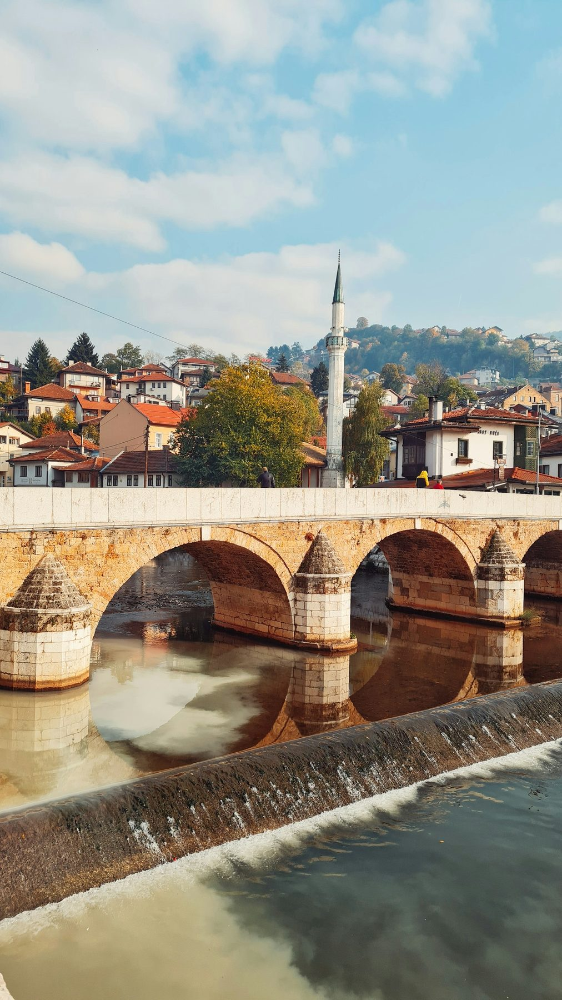
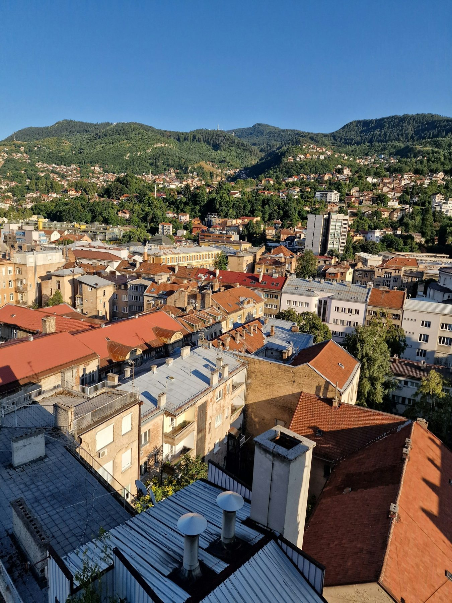

Sarajevo
No. 20 · Bosnia & Herzegovina · from the Bosnia deck · 4 nights + a relaxed last one
History, culture, food and mountains — the deck's first base and its last. Sarajevo opens the Bosnia combination and closes it: four days of Ottoman bazaars, Austro-Hungarian boulevards, the harder recent history, and a spring park to breathe out in.
The list
| No. | Thing | Notes |
|---|---|---|
| 1 | Baščaršija | The old Ottoman bazaar: the Sebilj fountain, little craft shops, and coffee drunk slowly. |
| 2 | Guided walking tour | Baščaršija's crafts, the Latin Bridge, Vijećnica (City Hall) and the Austro-Hungarian quarter — the city's layered influences in one walk. |
| 3 | Food tour or cooking class | The deck books one for the first afternoon — traditional Bosnian dinner, learned properly. |
| 4 | Tunnel of Hope Museum | The siege's lifeline under the runway. Sombre, essential, book ahead. |
| 5 | War Childhood Museum | Small and devastating — give it the hour it asks for. |
| 6 | Yellow Fortress | The climb for the view over the red roofs — the deck's sunset slot. |
| 7 | Vrelo Bosne | The relaxed day outside the city: natural springs, tree-lined avenues, picnics. Or a half-day mountain hike instead. |




Eat & drink: ćevapi with somun, burek by the slice, Bosnian coffee from a džezva. Currency is the convertible mark (KM), pegged at ~1.96 to the euro, cash preferred. Sarajevo airport (SJJ) is the deck's gateway; flights from South Africa route through hubs — a pattern to verify before booking.Field note · Balkans 2027